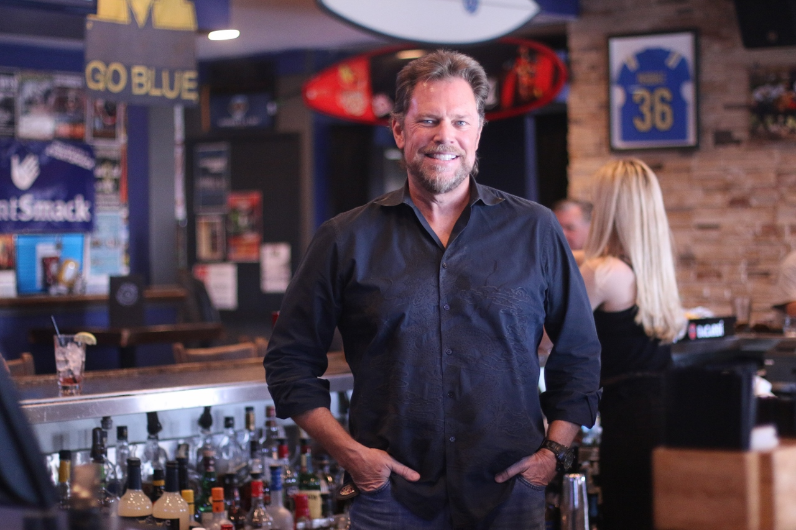

Persona
- Name:Richard Marks
- Age:47
- Lives:Albuquerque, New Mexico
- Job:Owner of a Venue
- Technology Used:
- 2016 MacBool Pro 15
- macOS High Sierra
- iPhone X
- Xfinity Business Internet
- Verison Unlimited plan.
- Behaviors and Attitudes:
- Has been using Facebook Events and The Alibi for posting events at his venue.
- Looking for new marketing strategies other than social media.
- He is on his phone a lot so looking for a site that is easy to use when he is on the go.
- Frustrations:
- He's used Facebook Marketing with no real return.
- Some web pages aren't easy to navigate and too busy.
- Site Usage:
- Posting events his venue is having.
- Seeing what events are going on the same night as his.
- Goals:
- To find a new way of getting his events viewed by patrons
- Wants to have a great open communication with firm and designers
- Create a online presence besides Facebook and website.